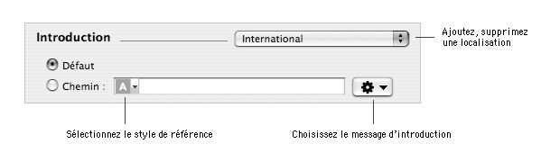

Ce document détaille les personnalisations que vous pouvez apporter à un composant et qui seront visibles lors de l'installation du package ou metapackage à l'aide du Programme d'installation.
Il est important de noter que seules les personnalisations du composant racine d'un projet seront visibles lors de l'installation.
|
Par défaut, lorsque vous installez un package ou metapackage, le Programme d'installation affiche le X du logo Mac OS X comme image de fond (sous Mac OS X 10.4, il s'agit désormais du logo Application). Vous pouvez remplacer cette image par une image personnalisée.
Pour utiliser l'image de fond par défaut :
| 1 | Sélectionnez le composant dans la colonne Packages et metapackages. |
| 2 | Choisissez Vue > Documents. |
| 3 | Cliquez sur le bouton radio Défaut de la section Image de fond. |
Pour utiliser une image de fond personnalisée :
| 1 | Sélectionnez le composant dans la colonne Packages et metapackages. | ||
| 2 | Choisissez Vue > Documents. | ||
| 3 | Cliquez sur le bouton radio Chemin de la section Image de fond. | ||
| 4 | Cliquez sur le menu local Action de la section Image de fond. | ||
| 5 | Choisissez Choisir… . | ||
| 6 | Sélectionnez l'image que vous souhaitez utiliser comme image de fond.
| ||
| 7 | Cliquez sur Choisir. |
Pour modifier l'échelle de l'image de fond :
| 1 | Sélectionnez le composant dans la colonne Packages et metapackages. |
| 2 | Choisissez Vue > Documents. |
| 2 | Cliquez sur le bouton radio :
|
Pour modifier l'alignement de l'image de fond :
| 1 | Sélectionnez le composant dans la colonne Packages et metapackages. | ||
| 2 | Choisissez Vue > Documents. | ||
| 3 | Choisissez l'alignement que vous souhaitez dans le menu local Alignement de la section Image de fond.
|
Par défaut, lorsque vous installez un package ou metapackage, le Programme d'installation affiche le message d'introduction qui suit : "Bienvenue dans le programme d'installation Mac OS X. Vous serez guidé durant toutes les étapes de l'installation de ce logiciel.". Vous pouvez remplacer ce message par un message personnalisé. Le message d'introduction peut être localisé dans différentes langues ou bien le même message peut être utilisé pour toutes les langues.
Important : Le message d'introduction est affiché dans une vue de taille réduite dont le contenu ne peut pas défiler.

Pour utiliser le message d'introduction par défaut :
| 1 | Sélectionnez le composant dans la colonne Packages et metapackages. | ||
| 2 | Choisissez Vue > Documents. | ||
| 3 | Cliquez sur le bouton radio Défaut de la section Introduction.
|
Remarque : Le message d'introduction par défaut sera affiché dans la langue choisie par l'utilisateur.
Pour utiliser un message d'introduction personnalisé :
| 1 | Sélectionnez le composant dans la colonne Packages et metapackages. | ||
| 2 | Choisissez Vue > Documents. | ||
| 3 | Cliquez sur le bouton radio Chemin de la section Introduction. | ||
| 4 | Cliquez sur le menu local Action de la section Introduction et choisissez Choisir… . | ||
| 6 | Sélectionnez le document texte que vous souhaitez utiliser comme message d'introduction.
| ||
| 7 | Cliquez sur Choisir. |
Remarque : Par défaut, le message d'introduction affiché sera le même quelle que soit la langue choisie par l'utilisateur. Pour afficher un message d'introduction localisé, il vous faudra ajouter des messages d'introduction localisés.
Pour ajouter une localisation au message d'introduction personnalisé :
| 1 | Sélectionnez le composant dans la colonne Packages et metapackages. |
| 2 | Choisissez Vue > Documents. |
| 3 | Cliquez sur le menu local localisation de la section Introduction et choisissez Ajouter une localisation… . |
| 4 | Tapez le nom de la localisation (en Anglais) et cliquez sur Ajouter. |
| 5 | Cliquez sur le bouton radio Chemin de la section Introduction. |
| 6 | Cliquez sur le menu local Action de la section Introduction et choisissez Choisir… . |
| 7 | Sélectionnez le document texte que vous souhaitez utiliser comme message d'introduction. |
| 8 | Cliquez sur Choisir. |
Pour modifier une localisation du message d'introduction personnalisé :
| 1 | Sélectionnez le composant dans la colonne Packages et metapackages. |
| 2 | Choisissez Vue > Documents. |
| 3 | Cliquez sur le menu local localisation de la section Introduction et choisissez la langue de la localisation que vous souhaitez modifier. |
| 3 | Modifiez la référence du fichier de la localisation à l'aide du menu local Action ou en éditant directement le chemin du fichier. |
Pour supprimer une localisation au message d'introduction personnalisé :
| 1 | Sélectionnez le composant dans la colonne Packages et metapackages. | ||
| 2 | Choisissez Vue > Documents. | ||
| 3 | Cliquez sur le menu local localisation de la section Introduction et choisissez la langue de la localisation que vous souhaitez supprimer. | ||
| 4 | Cliquez sur le menu local localisation de la section Introduction et choisissez Supprimer… . | ||
| 5 | Cliquez sur Supprimer.
|
Vous pouvez afficher dans le Programme d'installation après le message d'introduction un message Ouvrez-moi personnalisé. Celui-ci pourra être enregistré ou imprimé par l'utilisateur. Par défaut, aucun message Ouvrez-moi n'est affiché. Le message Ouvrez-moi peut être localisé dans différentes langues ou bien le même message peut être utilisé pour toutes les langues.
Pour ne pas afficher de message Ouvrez-moi :
| 1 | Sélectionnez le composant dans la colonne Packages et metapackages. | ||
| 2 | Choisissez Vue > Documents. | ||
| 3 | Cliquez sur le bouton radio Aucun de la section Ouvrez-moi.
|
Pour afficher un message Ouvrez-moi personnalisé :
| 1 | Sélectionnez le composant dans la colonne Packages et metapackages. | ||
| 2 | Choisissez Vue > Documents. | ||
| 3 | Cliquez sur le bouton radio Chemin de la section Ouvrez-moi. | ||
| 4 | Cliquez sur le menu local Action de la section Ouvrez-moi et choisissez Choisir… . | ||
| 6 | Sélectionnez le document texte que vous souhaitez utiliser comme message Ouvrez-moi.
| ||
| 7 | Cliquez sur Choisir. |
Pour ajouter une localisation au message Ouvrez-moi personnalisé :
| 1 | Sélectionnez le composant dans la colonne Packages et metapackages. |
| 2 | Choisissez Vue > Documents. |
| 3 | Cliquez sur le menu local localisation de la section Ouvrez-moi et choisissez Ajouter une localisation… . |
| 4 | Tapez le nom de la localisation (en Anglais) et cliquez sur Ajouter. |
| 5 | Cliquez sur le bouton radio Chemin de la section Ouvrez-moi. |
| 6 | Cliquez sur le menu local Action de la section Ouvrez-moi et choisissez Choisir… . |
| 7 | Sélectionnez le document texte que vous souhaitez utiliser comme message Ouvrez-moi. |
| 8 | Cliquez sur Choisir. |
Pour modifier une localisation du message Ouvrez-moi personnalisé :
| 1 | Sélectionnez le composant dans la colonne Packages et metapackages. |
| 2 | Choisissez Vue > Documents. |
| 3 | Cliquez sur le menu local localisation de la section Ouvrez-moi et choisissez la langue de la localisation que vous souhaitez modifier. |
| 3 | Modifiez la référence du fichier de la localisation à l'aide du menu local Action ou en éditant directement le chemin du fichier. |
Pour supprimer une localisation au message Ouvrez-moi personnalisé :
| 1 | Sélectionnez le composant dans la colonne Packages et metapackages. | ||
| 2 | Choisissez Vue > Documents. | ||
| 3 | Cliquez sur le menu local localisation de la section Ouvrez-moi et choisissez la langue de la localisation que vous souhaitez supprimer. | ||
| 4 | Cliquez sur le menu local localisation de la section Ouvrez-moi et choisissez Supprimer… . | ||
| 5 | Cliquez sur Supprimer.
|
Vous pouvez afficher dans le Programme d'installation après le message d'introduction (ou Ouvrez-moi) une licence utilisateur dont les termes devront être approuvés par l'utilisateur pour que l'installation se poursuive. Cette licence pourra être enregistrée ou imprimée par l'utilisateur. Par défaut, aucune licence utilisateur n'est affichée. Si plusieurs localisations de la licence utilisateur sont présentes, elles seront toutes accessibles.
Pour ne pas afficher de licence utilisateur :
| 1 | Sélectionnez le composant dans la colonne Packages et metapackages. | ||
| 2 | Choisissez Vue > Documents. | ||
| 3 | Cliquez sur le bouton radio Aucun de la section Licence.
|
Pour afficher une licence utilisateur à partir d'un document :
| 1 | Sélectionnez le composant dans la colonne Packages et metapackages. | ||
| 2 | Choisissez Vue > Documents. | ||
| 3 | Cliquez sur le bouton radio Chemin de la section Licence. | ||
| 4 | Cliquez sur le menu local Action de la section Licence et choisissez Choisir… . | ||
| 6 | Sélectionnez le document texte que vous souhaitez utiliser comme licence utilisateur.
| ||
| 7 | Cliquez sur Choisir. |
Pour afficher une licence utilisateur basée sur un modèle de licence utilisateur :
| 1 | Sélectionnez le composant dans la colonne Packages et metapackages. | ||
| 2 | Choisissez Vue > Documents. | ||
| 3 | Cliquez sur le bouton radio Modèle de la section Licence. | ||
| 4 | Sélectionnez le modèle de licence dans le menu local Modèle.
|
Pour ajouter une localisation de licence utilisateur :
| 1 | Sélectionnez le composant dans la colonne Packages et metapackages. |
| 2 | Choisissez Vue > Documents. |
| 3 | Cliquez sur le menu local localisation de la section Licence et choisissez Ajouter une localisation… . |
| 4 | Tapez le nom de la localisation (en Anglais) et cliquez sur Ajouter. |
| 5 | Configurez la nouvelle localisation comme vous le souhaitez. |
Pour modifier une localisation de licence utilisateur :
| 1 | Sélectionnez le composant dans la colonne Packages et metapackages. |
| 2 | Choisissez Vue > Documents. |
| 3 | Cliquez sur le menu local localisation de la section Licence et choisissez la langue de la localisation que vous souhaitez modifier. |
| 3 | Modifiez la référence du fichier de la localisation à l'aide du menu local Action ou en éditant directement le chemin du fichier. |
Pour supprimer une localisation de licence utilisateur :
| 1 | Sélectionnez le composant dans la colonne Packages et metapackages. | ||
| 2 | Choisissez Vue > Documents. | ||
| 3 | Cliquez sur le menu local localisation de la section Licence et choisissez la langue de la localisation que vous souhaitez supprimer. | ||
| 4 | Cliquez sur le menu local localisation de la section Licence et choisissez Supprimer… . | ||
| 5 | Cliquez sur Supprimer.
|
Vous pouvez pré-visualiser les personnalisations que vous avez apportées au composant en utilisant le simulateur d'installation intégré à Iceberg. Ce simulateur permet de visualiser les trois premières étapes potentielles du Programme d'installation dans la langue que vous souhaitez. Il permet aussi de modifier l'alignement et l'échelle de l'image de fond si une image personnalisée est utilisée.
Pour lancer la simulation d'installation d'un composant :
| 1 | Sélectionnez le composant dans la colonne Packages et metapackages. |
| 2 | Choisissez Construction > Aperçu. |
Pour modifier l'alignement ou l'échelle de l'image de fond :
| 1 | Cliquez sur le menu local de configuration de l'image de fond dans la fenêtre du simulateur. |
| 2 | Sélectionnez les options d'alignement et d'échelle dans le menu contextuel. |
Pour quitter le simulateur :
| 1 | Cliquez sur Fermer. |
| 2 | Si vous avez modifié un des réglages de l'image de fond, un dialogue de confirmation vous demandera de valider ou annuler les modifications. |